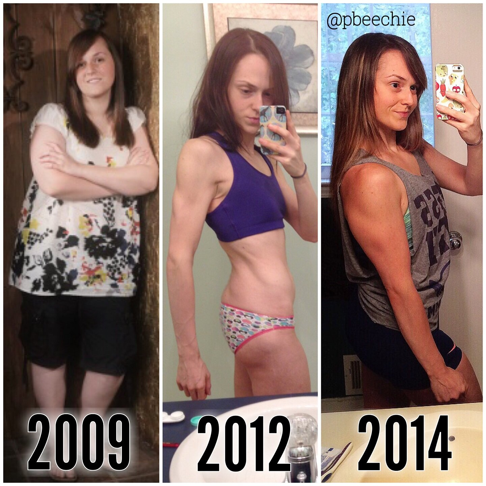

Love Yourself

Oh my god please love yourself. Love your body. Love it enough to exercise it often for good health. But also shower it with love and rest in return for being so rad when it's worked. Feed it with bountiful nutrient-packed foods, and feed it in sufficient amounts. You have to feed it. Move it. But rest. Treat it as if it's the most precious thing you own. It is. It is your everything. The body is so amazing. It goes through so many forms in your lifetime. In all stages of life, it manages to support and carry you. You HAVE GOT to support your body in return. Embrace all of its forms in every stage of life. And please dear god just love yourself.
I also want to clarify a few things after posting this to Instagram yesterday. 1 - sorry for my bum in the middle picture. 2 - Weights were 185 lbs, 105 lbs, and 135 lbs, where I've hovered at for a year now. 3 - I found the middle picture Monday night after going through old "progress" photos and was so shocked. I didn't realize how different my body has been just within the last 3 years (when I began my fitness journey). I haven't shown anyone the photos when I was at my lowest weight here so idk it's pretty hard to... Looking back, I don't view myself as I did when I took the picture. I remember feeling overweight and still needing to "lose 5 more pounds" so the picture elicits sadness for me as I reflect on the negativity I had towards myself. 4 - Someone commented saying I looked better in the middle. While I respect his opinion, I'm not saying any one version is better than the rest. Rather, this is a juxtaposition of many forms my body has withstood through the years. Although, my present state is the healthiest mental state. I was a wreck in the 2009 and 2012 pictures who failed to love myself and only saw negatives. And I've finally grasped it. I really prefer my strong body, as it comes with a strong mind, too. My past self would probably hate my present self. But my present self is beyond content and loves every form of my wonderful body. Everyone should.